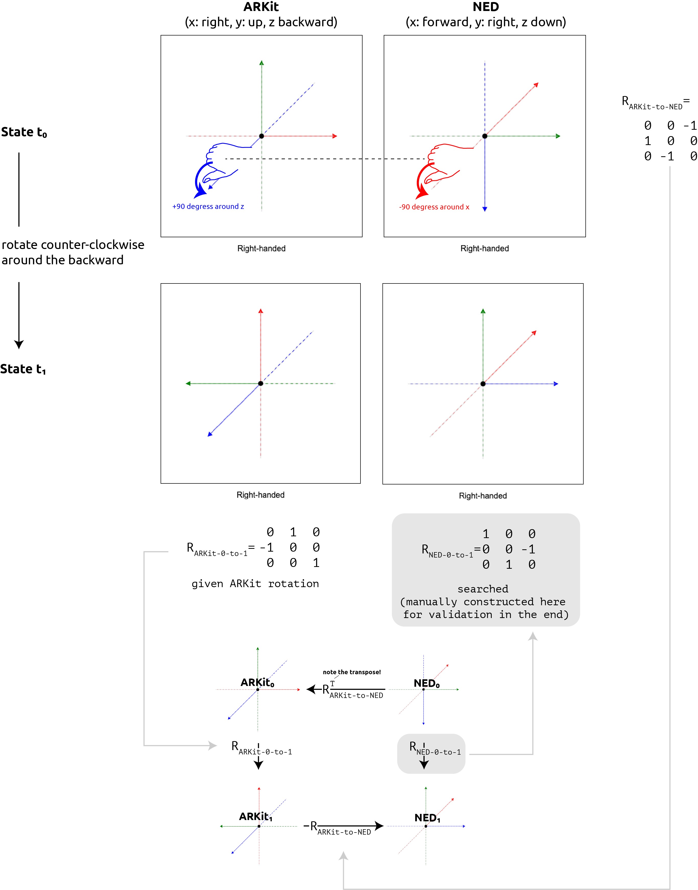

There are 48 combinatorial ways of assigning coordinate frame axes (assign right/left, up/down, and forward/backward to x, y, z, which is $6 \times 4 \times 2$), and it seems as if our disciplines give their best in trying to use all of them. Unfortunately, this means there are $48\times47=2556$ ways of converting between coordinate frames, and each of them is dangerously close to a bug. As if that were not enough, words like extrinsics or pose matrix are used with different meanings, adding to the confusion that inherently surrounds transforms and rotations. My coordinate frame convention conversion tool (https://mkari.de/coord-converter/) simplifies this process radically. In this blog post, I discuss the underlying background of transforms, the ‘manual’ process of performing point and especially rotation conversions, and the tasks that typically follow or are associated with them.
Table of Contents
- Table of Contents
- Step 1: Understanding coordinate frame conventions
- Step 2: Understanding camera transforms
- 2a: Starting with a world-aligned camera
- 2b: Understanding camera translation & specifying cam-to-world translation
- 2c: Understanding camera rotation & specifying the cam-to-world rotation from an orthonormal basis
- 2d: Obtaining the camera pose matrix (synonymously: the cam-to-world matrix)
- 2e: Obtaining the camera extrinsics matrix (synonymously: the world-to-cam matrix for the computer graphics & projection pipeline)
- 2f: Summary & cam transform convention
- Step 3: Understanding properties and computing rules with transforms and rotation matrices
- Converting between coordinate system conventions
- Conclusion
This post serves as my personal primer whenever I start a new cross-convention 3D project (e.g., capturing poses with sensors in one convention and processing them in a 3D engine with a different convention). As a refresher, it’s also always good to take a look at the lecture series on computer graphics by Prof. Kenneth Joy.
Step 1: Understanding coordinate frame conventions
Of the above-mentioned 48 possible conventions, there are some conventions that are used quite frequently. In computer graphics, our 2D plane of interest is the image, thus the plane axes are denominated with x and y, while z refers to depth (hence z-fighting, z-buffering, etc.) and thus is assigned the forward or backward direction. In navigation (and thus aviation), our 2D plane of interest is the earth’s surface, as we often think about navigating 2D maps, and thus x and y refer to forward/backward and left/right, whereas z refers to the up/down direction. I have encountered the following conventions in the past years, maintaining the below table as a quick cheat sheet.
| coordinate system: handedness | camera: forward direction | camera: up direction | equivalent notation | |
|---|---|---|---|---|
| Unity, East-Up-North(EUN) | left-handed | looks along the positive z-axis | positive y | x right, y up, z forward |
| ARKit/OpenGl/Blender/InstantNGP/Nerfstudio | right-handed | looks along the negative z-axis | positive y | x right, y up, z backward |
| Open3D, opencv, Top-Secret | right-handed | looks along the positive z-axis | negative y | x right, y down, z forward |
| PyTorch3D | right-handed | looks along the positive z-axis | positive y | x left, y up, z forward |
| DJI MobileSDK Body Coordinate System | right-handed | looks along the positive x-axis (roll axis) | negative z (yaw axis) | x forward, y right, z down |
| Local Tangent Plane Coordinate System: NED | right-handed | looks along the positive x-axis (north axis) | negative z (down axis) | x forward, y right, z down |
| ECEF Earth Coordinate System | right-handed | no cams | no cams | no cams |
| ECEF Earth Coordinate System with NED cam | right-handed | looks along the positive x-axis (Null island) | to South Pole: negative z | x forward, y right, z down |
Table: Coordinate system conventions and camera conventions in different frameworks
To specify our coordinate frame convention, we need to indicate three pieces of information as we have three axes. One way of indicating the convention is specifying x as right or left, y as up or down, and z as back or forward. This is my preferred way of indicating a convention. An alternative way of indicating the convention is specifying only two axes explicitly and providing the handedness of the coordinate frame so we can derive the missing axis by using the corresponding hand’s rule.
The handedness of a coordinate system dictates two principles: First, when aligning the thumb with x and the index finger with y, it tells us the positive direction of z, i.e., the direction of the cross-product of x and y. Second, when aligning the thumb with the positive direction of an axis, curling the fingers tells us the direction of the positive rotation around that axis (“grip rule” or “cup rule”). In a left-handed coordinate system, we use the left hand for both principles. In a right-handed system, we use the right hand for both.
In some contexts, each axis has a special name:
| x | y | z | |
|---|---|---|---|
| DJI Body Coordinate System | roll axis (forward) | pitch axis (right) | yaw axis (down) |
| LTP/NED Ground Coordinates | North (forward) | East (right) | Down (down) |
| ECEF Body Coordinate System | center-to-Null-Island | center-to-North-Pole | center-to-0N90E |
Table: Axes names
Step 2: Understanding camera transforms
Before getting to convert between different coordinate conventions, let’s begin at the beginning, i.e., using a single coordinate convention.
2a: Starting with a world-aligned camera
The most basic thing in a coordinate frame is easy to understand: describe the position of a point $p = (x, y, z)$, which means go x units along the x-axis, etc. However, it gets a bit more difficult when we use the coordinate frame to describe transformations of either point clouds or the camera. Most importantly, let’s consider rigid transformations, i.e., point motion or camera motion, and here let’s start with camera motion.
For example, ARKit uses a right-handed coordinate system with x right, y up, and z backward, i.e., it is right-handed. Consider an initial state where the smartphone is in landscape mode with the phone top to the left, and the world coordinate frame is reset, so that the world coordinate frame and camera coordinate frame are perfectly aligned. Then, the camera looks down the negative z-axis. The camera’s up direction points along the positive y-axis. Thus (using the right-hand rule), the x-axis points to the right. The camera’s translation with respect to the world coordinate system is $t_w=(0, 0, 0)$. The camera’s rotation with respect to the world coordinate system is
$$ R_w=q(0,0,0;1) = \begin{pmatrix} 1 & 0 & 0\\ 0 & 1 & 0\\ 0 & 0 & 1 \end{pmatrix}. $$
As ARKit uses gravity to determine the world’s upward direction, any initial rotation in the world configuration about the z-axis does not influence the world coordinate frame definition. That is, if the phone were in standard portrait mode at reset time, it would be rotated about the z-axis from the start. The right-hand grip rule tells us, that it would be rotated in the positive direction by 270 degrees when started up in standard portrait mode.
2b: Understanding camera translation & specifying cam-to-world translation
Imagine physically mounting a plastic coordinate frame to the iPhone in this world-aligned state. Now, as we translate the camera through space and rotate it, the plastic coordinate frame also moves in lock-step. The iPhone’s visual-inertial odometry updates the camera translation and rotation frame by frame accordingly.
As we move 1 meter forward, z decreases. The new camera position will be $(0, 0, -1)$.
So, to numerically describe camera translation, all we need is a camera translation vector. The corresponding homogeneous translation matrix (with this vector directly plugged into the last column of a 4x4 identity matrix) is
$$ T= \begin{pmatrix} 1 & 0 & 0 & 0\\ 0 & 1 & 0 & 0\\ 0 & 0 & 1 & -1\\ 0 & 0 & 0 & 1 \end{pmatrix}. $$
Adding this translation vector to the zero vector (0, 0, 0) or pre-multiplying the homogeneous translation matrix with the homogeneous zero vector (0, 0, 0, 1), can be interpreted in two ways:
First, it describes moving the camera and all camera-locked points from $(0, 0, 0)$ to $(0, 0, -1)$ in world coordinates:
- the camera is at $(0, 0, 0)$ in world coordinates
- we add the translation vector $(0, 0, -1)$ to translate the camera
- we obtain the new camera position $(0, 0, -1)$ in world coordinates.
Second, it describes converting the camera origin and all camera-locked points from camera coordinates to world coordinates:
- the camera is at $(0, 0, 0)$ in camera coordinates
- we add the translation vector $(0, 0, -1)$ to convert camera coordinates to world coordinates
- we obtain the camera position $(0, 0, -1)$ in world coordinates.
To summarize, there are two ways of interpreting translation (and as we will see rotation) matrices:
- “physically moving” a camera from one coordinate frame to the next while remaining in the same world coordinate system.
- converting a point to a different notation of the exact same point where each notation is dependent upon the chosen coordinate frame.
Both notions are numerically equivalent, i.e., the same numbers result. They simply offer different approaches to “thinking” the transform operation. Interestingly, I am under the impression that the majority of books, people and frameworks operate with the second interpretation whenever possible. In contrast, I nearly always think of operations in the first manner.
Here is my mnemonic technique to remember what cam-to-world means:
- the cam-to-world matrix converts from camera coordinates to world coordinates (which is the way normal people think about this term)
- the cam-to-world matrix pulls the camera out into the world
2c: Understanding camera rotation & specifying the cam-to-world rotation from an orthonormal basis
Now, instead, let’s imagine we stay in the world origin, and spin around the heel for +90 degrees around y (this means counter-clockwise so that we face to the left afterward). The iPhone’s y-axis still points upwards, i.e., positive y remains positive y. Its x-axis however now points to what we call negative z in the world coordinate frame (as we can also see from the plastic coordinate frame mounted to it). And the iPhone’s z-axis now points to what we call positive x*.
How do we describe this numerically? Of course, $(1, 0, 0)_{world}$ in world coordinates becomes $(1, 0, 0)_{cam}$ in camera coordinates but that is trivial and does not provide us with information about the spatial relationship between the two. Instead, we need to know how the camera coordinate axes are situated _with respect to the world axes_. Describing the camera motion from the perspective of the world coordinate system, the world's *positive x* $(1, 0, 0)_{\text{world}}$ becomes $(0, 0, -1)_{world}$ for the camera's x-axis. The world's *positive y* $(0, 1, 0)_{world}$ stays $(0, 1, 0)_{world}$ for the camera's y-axis. The world's *positive z* $(0, 0, 1)_{world}$ becomes $(1, 0, 0)_{world}$ as the camera's z-axis.
To describe this rotation, we can make use of a rotation matrix that can be pre-multiplied to a vector in order to obtain the vector rotated about the rotation center.
To specify this rotation matrix, we can simply ask us which rotation matrix maps the x-axis $(1, 0, 0)$ or more precisely, the point at the tip of the unit vector in x direction, to (0, 0, -1). Similarly, we want to map y and z, i.e., we want a matrix $R \in \mathbb{R}^{3\times3}$ where:
$$ R\cdot \begin{pmatrix} 1\\ 0\\ 0 \end{pmatrix} = \begin{pmatrix} 0\\ 0\\ -1 \end{pmatrix} $$ $$ R\cdot \begin{pmatrix} 0\\ 1\\ 0 \end{pmatrix} = \begin{pmatrix} 0\\ 1\\ 0 \end{pmatrix} $$ $$ R\cdot \begin{pmatrix} 0\\ 0\\ 1 \end{pmatrix} = \begin{pmatrix} 1\\ 0\\ 0 \end{pmatrix} $$
When written down as in the above, the one-hot vectors on the right perform a column selection in $R$. Therefore, we know that
$$R= \begin{pmatrix} 0&0&1\\ 0&1&0\\ -1&0&0 \end{pmatrix}. $$
In summary, we can easily construct our desired rotation matrix by stacking the unit vectors pointing along the three desired new axes as columns, thus describing where each axis goes. The matrix constructed like this will comply with the necessary and sufficient (i.e., “if and only if”) properties satisfied by any rotation matrix:
- orthogonality ($R^{-1}=R^T$)
- $det(R) = 1$
In the same way that the above-constructed cam-to-world translation vector can be interpreted
- as a vector that translates the origin-aligned camera from (0, 0, 0) in world coordinates out into the world and equivalently
- as a vector that translates any point from the camera coordinate system into world coordinates, the so-constructed cam-to-world rotation matrix can be interpreted analogously.
First, it can be considered as rotating the world coordinate system onto the camera coordinate system while still using world-coordinate-referenced numbers. So, by premultiplying this matrix to the camera and any point surrounding it, we rotate the camera and the points around the world origin obtaining rotated positions in world coordinate systems.
Second, it can be understood as converting the notation from camera-referenced rotations into world-referenced rotations: E.g., let's take the perspective of the camera: $(1, 0, 0)_{\text{cam}}$ is the x-axis of the camera. When pre-multiplying this constructed cam-to-world rotation matrix, $(1, 0, 0)_{\text{cam}}$ selects the first column of the rotation matrix and obtains the direction in world coordinate systems. So, put differently, the camera rotation is converted to the world coordinate system. The first, second, and third column describes how the tip of the first, second and third camera unit axis is called in the world coordinate system.
Hence, the name cam-to-world matrix.
2d: Obtaining the camera pose matrix (synonymously: the cam-to-world matrix)
So, to repeat, we now have a cam-to-world translation, and a cam-to-world rotation, which can be interpreted
- either as moving the camera from an initial world-aligned state to a new state that is described in world coordinates,
- or as converting camera coordinates into world coordinates.
After defining the camera’s translation vector and the camera’s 3x3 rotation matrix with columns like this, we often want to combine them in a single 4x4 homogeneous pose matrix $P$ (synonymously cam-to-world matrix** $M_{\text{cam-to-world}}$) that can be easily premultiplied to incoming points.
We have at least two ways of obtaining $M_{\text{cam-to-world}}$.
Note that I use the term pre-multiplying in the following, even though there is no point to the right. This linguistic convention serves as a reminder that corresponding geometric operations are applied from right to left. You can always imagine a point to the right to make sense of this.
Alternative 1: Pre-multiplying the cam-to-world rotation and translation in the correct order
Imagine a camera in the origin and a point 5 meters in front of it. Imagine the new camera is rotated to the left and also moved 1 meter to the left (hovering above your shoulder). To transform the point ahead to also be ahead of the camera, we first need to rotate, and then translate it.
To do so,
- first, compose the homogeneous translation matrix, i.e., take an identity matrix of 4x4, then plug in the translation $t$ into the last column’s top three values (yielding $T_{\text{cam-to-world}}$)
- second, compose the homogeneous rotation matrix, i.e., take an identity matrix of 4x4, then plug in the described 3x3 rotation $r$ into the top-left 3x3 “sub-matrix” (yielding $R_{\text{cam-to-world}}$).
Then, our cam-to-world transform matrix is obtained via:
$P=M_{\text{cam-to-world}} = T_{\text{cam-to-world}} \cdot R_{\text{cam-to-world}}$
Alternative 2: Plugging together the pose matrix directly
Alternatively, we can also plug the pose matrix together from the camera position and cam-to-world rotation directly.
Simply initialize an identity matrix (M = np.identity(4)),
plug in the 3x3 cam-to-world rotation into the first three columns and top three rows (M[:3,:3] = r),
and then the 3x1 translation vector (M[:3,3] = t) into the last column.
This yields:
$$P= \begin{bmatrix} R_{3\times3}&t_{3\times1}\\ 0_{1\times3}&1_{1\times1} \end{bmatrix} $$
Note that we can easily read out the camera position from the pose matrix (hence, the name).
These two alternatives produce the same result which we call pose matrix or cam-to-world matrix, i.e.,
$$P=M_{\text{cam-to-world}}=[R_{\text{cam-to-world}}|t]=T\cdot R.$$
2e: Obtaining the camera extrinsics matrix (synonymously: the world-to-cam matrix for the computer graphics & projection pipeline)
The extrinsics matrix $E$ converts from world coordinates to camera coordinates. This is why it is extensively used in computer graphics where we need to get 3D points in world space into camera space before projecting them into image space.
It can also be understood as moving the camera together with all its surrounding points in world coordinates to the origin while always remaining in the world coordinate system.
Again, there are multiple ways of obtaining it.
Alternative 1: Inverting the cam-to-world matrix (synonymously: inverting the pose matrix)
For this approach, we leverage that
$E=M_{\text{world-to-cam}} = M_{\text{cam-to-world}}^{-1}$ .
To this end, we invert the pose matrix using something like Python’s np.linalg.inv(m) or Unity’s Matrix4x4 inv = m.inverse;.
Alternative 2: Pre-multiplying the inverses of the cam-to-world rotation and cam-to-world translation in the correct order
The above alternative 1 inverts the 4x4 matrix numerically. If we want to avoid this, we can instead reduce the problem to simpler inversions of the underlying rotation and translation matrices.
To this end, we first start by plugging the basics from above together:
$E=M_{\text{world-to-cam}} = (M_{\text{cam-to-world}})^{-1} = (T_{\text{cam-to-world}} \cdot R_{\text{cam-to-world}})^{-1}$
Then, we can exploit the fact that the inverse of a product of two invertible matrices is the same as the product of the inverted matrices in reverse order, which finally gives us:
$E=M_{\text{world-to-cam}} = R_{\text{cam-to-world}}^{-1} \cdot T_{\text{cam-to-world}}^{-1}$
Inverting the rotation matrix and the translation matrix is very simple as
- inverting a rotation matrix is taking its transpose,
- inverting a translation matrix is flipping all signs in the last-column top-three elements.
Alternative 3: Plugging together the extrinsics matrix directly
Again, we can also just plug the extrinsics matrix together without multiplying the two 4x4 matrices at all.
$$E=M_{\text{world-to-cam}}= \begin{bmatrix} {R}_{3\times3}^{\text{world-to-cam}}&{t^*}_{3\times1}\\ 0_{1\times3}&1_{1\times1} \end{bmatrix} $$
The top left 3x3 slice contains $R_{\text{world-to-cam}}$ which is the inverted $R_{\text{cam-to-world}}$ matrix. Remember that $R^T=R^{-1}$, so a valid rotation matrix is easy to invert. The last 3x1 column is obtained as $t^*=-R_{\text{world-to-cam}}t$, where $t$ is the camera’s position in world coordinates. The bottom 1x4 row contains the homogeneous appendix $(0., 0., 0., 1.)$.
Beware, too many times, I have tried to plug in the sign-swapped translation vector directly here, forgetting to premultiply $R_{\text{world-to-cam}}$.
2f: Summary & cam transform convention
To summarize, we distinguish between the following matrices:
| synonyms (in my world but sometimes used conflictingly) |
|---|
| (camera) transform (matrix), pose matrix, camera-to-world matrix |
| view matrix, world-to-camera matrix, extrinsics matrix |
| intrinsics matrix |
| projection matrix |
Table: different matrices involved in computer vision and computer graphics
The intrinsics matrix contains the measured properties of the camera and can used to project 3D points onto the image plane. The projection matrix can additionally take care of far-near clipping and viewport clipping. Thus, while the intrinsics matrix contains only information relating to the camera properties, the projection matrix also contains information about the rendering chosen arbitrarily.
In this post, we take particular interest in the pose matrix and the extrinsics matrix, which can obtained as follows:
$$P=E^{-1}=M_{\text{cam-to-world}}=T_{\text{cam-to-world}}\cdot R_{\text{cam-to-world}}=[R_{\text{cam-to-world}}|t]$$ $$E=P^{-1}=M_{\text{world-to-cam}}= R_{\text{cam-to-world}}^{-1} \cdot T_{\text{cam-to-world}}^{-1}=[R_{\text{world-to-cam}}|t^*]\text{ with }t^*=-R_{\text{world-to-cam}}t.$$
It is always important to think about which “cam transform convention” the framework one is working with follows. Sometimes, the camera position and rotation are indicated via a pose matrix, at other times they are represented as an extrinsics matrix.
For example, In ARKit, frame.camera.transform.columns refers to a camera pose matrix, not an extrinsics matrix.
| cam transform convention | as a result: T describes the camera position | |
|---|---|---|
| Top-Secret, NeRFStudio, ARKit | camera-to-world / pose | yes |
| openGL | world-to-camera | no |
To summarize, one good approach is to first obtain the pose matrix (cam-to-world matrix) and then the extrinsics matrix (world-to-camera matrix), as follows:
- derive the rotation that maps each camera basis vector to a direction provided by the world coordinate frame,
- derive the translation that moves the world origin onto the camera coordinate,
- then rotate and afterwards translate ($T’ R’ \times p$) to obtain the cam-to-world matrix,
- finally, invert the whole thing to obtain the world-to-cam matrix.
Table: cam transform convention
Step 3: Understanding properties and computing rules with transforms and rotation matrices
Properties of rotations
Definition
A matrix is a rotation matrix if and only if
- $R$ is an orthonormal matrix, i.e.,
- $R$ is orthogonal (i.e., the matrix inverse is equal to its transpose $R^{-1}=R^T$), and
- each row vector of $R$ has length 1,
- $R$ has determinant +1.
All matrixes $R \in \mathbb{R}^n$ with the above two properties form $SO(n)$, the special orthogonal group of $n$.
### Rotation ###
r = np.array([
[1, 0, 0],
[0, 0, 1],
[0, -1, 0],
])
R = np.identity(4)
R[:3,:3]=r
# properties of a rotation
assert np.all(np.linalg.det(R) == 1)
assert np.all(R.T == np.linalg.inv(R))
Non-Symmetry
Rotation matrices can be but are not necessarily symmetric, i.e., $R = R^{T}$ does generally not hold.
Interesting implication of orthonormality
Orthonormality is equivalent to the property that the row vectors form an orthonormal basis. This is equivalent to the property that the columns vector form an orthonormal basis. As an interesting side effect of the orthonormality property, the rotation matrix contains redundancy as we only need two base vectors, i.e. two rows, i.e., two columns, to compute the third vector as the cross product of the two given vectors.
Interesting implication of $det(R) = +1$
An orthonormal matrix could have determinant -1 or +1, but [a rotation matrix is an orthonormal matrix with $det(R)=+1$](https://en.wikipedia.org/wiki/Orthogonal_group, https://en.wikipedia.org/wiki/3D_rotation_group#Orthogonal_and_rotation_matrices).
An axis sign flip cannot be represented by a proper rotation matrix. Flipping a sign in a rotation matrix with 3 positive or negative ones will flip the determinant. So, to convert from a right-hand coordinate system to a left-hand coordinate system, we have to first align two axes and then flip the remaining one.
Properties of translations
### Translation ###
t = np.array([1, 2, 3])
T = np.identity(4)
T[:3,3]=t
# sanity check that we understand what we are doing
assert np.all(np.linalg.inv(T) == np.array([
[1, 0, 0, -1],
[0, 1, 0, -2],
[0, 0, 1, -3],
[0, 0, 0, 1],
]))
Properties translational and rotational transformation sequences
$R \times T \neq [R_{3\times3} T_{3\times1}]$ — BUT — $T \times R = [R_{3\times3} T_{3\times1}]$
A mistake I have made too many times in my early days.
### Plugged together ###
M = np.identity(4)
M[:3,:3] = r
M[:3,3] = t
# there are two ways of obtaining the pose matrix
print(f"M:\n{M}")
print(f"T@R:\n{T@R}")
assert np.all(T @ R == M)
# this is not a way of obtaining the pose matrix
assert not np.all(R @ T == M)
$R \times T = (T^{-1} \times R^{-1})^{-1}$
Too many times, I doubted myself because I was violating the $TRS\times p$ rule: first scale, then rotate, and finally translate. However, as described above when computing the extrinsics matrix from the pose matrix as an alternative, we are in need to first translate and only then rotate some of the matrices we are looking at.
This follows from the following rule: Given two invertible matrices, the inverse of their product is the product of their inverses in reverse order (https://en.wikipedia.org/wiki/Invertible_matrix#Other_properties):
$ (R \times T)^{-1} = R^{-1} \times T^{-1} $
And then, inverting left-hand and right-hand side: $ R \times T = (T^{-1} \times R^{-1})^{-1} $
We can gain confidence in Python:
## the product of two invertible matrices is the same as the inverse of the inverted matrices in reverse order
assert np.all(R @ T == np.linalg.inv(np.linalg.inv(T) @ np.linalg.inv(R)))
assert np.all(T @ R == np.linalg.inv(np.linalg.inv(R) @ np.linalg.inv(T)))
Because we can compute the extrinsics matrix as the inverse of the pose matrix, we actually are in need to first translate and then rotate with corresponding inverted matrices.
# there are three ways of obtaining the extrinsics matrix
M_inv = np.linalg.inv(M)
M_inv_factors = np.linalg.inv(R) @ np.linalg.inv(T)
M_inv_plugged = np.identity(4)
M_inv_plugged[:3,:3] = np.linalg.inv(r)
M_inv_plugged[:3,3] = - np.linalg.inv(r) @ t
print(f"M_inv:\n{M_inv}")
print(f"M_inv_factors:\n{M_inv_factors}")
print(f"M_inv_plugged:\n{M_inv_plugged}")
assert np.all(M_inv == M_inv_factors)
assert np.all(M_inv == M_inv_plugged)
Associativity but no commutativity
Always remember that matrix multiplication is associative but not commutative.
Converting between coordinate system conventions
Finally, let’s consider converting between coordinate conventions. The below thoughts lead to my coordinate convention conversion tool, found at https://mkari.de/coord-converter/. Potentially, this can save you days of debugging, so make sure to check it out.
Step 1: Visualizing world and camera axes
For illustration, remember that xyz corresponds with RGB, i.e.: The x-axis (first axis) is always visualized as red. The y-axis (second axis) is always visualized as green. The z-axis (third axis) is always visualized as blue.
The only question that one sometimes finds oneself having is: Are we looking at a global or local coordinate axis? For example, the camera coordinate system’s y-axis might drop to the world coordinate system’s x-axis during a rotation or convention transform, so be sure to be consistent about this.
Step 2: Specifying a convention transform
A change in convention can be represented by a 3x3 or 4x4 convention transform. If the handedness does not change between conventions, the convention transform is a proper rotation matrix. If handedness changes, the convention transforms determinant becomes negative, making it what is sometimes called an improper rotation matrix.
However, this does not change the process at all. Instead, simply need to ask ourselves how to define the convention transform.
Imagine you get coordinates in NED (x forward, y right, z down) and want to map them to Unity (x right, y up, z forward).
My recipe is as follows:
- Draw the camera perspectives on paper with the source coordinate convention (here: NED) on the left and the target (here: Unity) on the right.
- Iterate over the left (i.e., source) axes and ask yourself: Which target unit do I get for my source unit? That’s basically what conversion is, right? For each axis, note the answer in a column, filling up from left to right.
- Once done, you have 3 columns, making up an orthonormal matrix with determinant 1 (i.e., a rotation matrix), or an orthonormal matrix with determinant -1 (because handedness flipped).
Step 3: Point conversions
To convert incoming points from the source coordinate frame, pre-multiply the convention transform matrix to your incoming source points.
Step 4: Rotation conversion
Converting rotations is a bit more intricate again. The process depends on the rotation representation used by the source system: Rotation matrices (as defined above), Euler angles, or quaternions.
Converting incoming rotation matrices
Imagine, we obtain tracking data from ARKit (x right, y up, z backward) and want to visualize it in a 3D rendering engine that uses an NED convention (x forward, y right, z down). I chose this conversion example, because all axes are different, making it easier to spot sign errors.
The example is visualized end-to-end in the next figure and verbalized afterward in 3 steps.

Consider the initial state where the phone is aligned with the ARKit world coordinate system. Imagine a physically mounted plastic frustum extending forward as well as two physically mounted coordinate frames, one in the ARKit convention and one in the NED convention, all glued to the phone. In this initial state in ARKit, the phone's rotation matrix as tracked by ARKit is equal to the identity. Considering the ARKit coordinate frame, the tip of the z-axis lies at $(0,0,1)_\text{ARKit}$ in ARKit convention, facing backward and jabbing the user into the eye. Considering the NED coordinate frame, the tip of the x-axis extends forward $(1,0,0)_\text{ARKit}$.
Sub-Step A: Obtaining the convention transform from source to target
Following the recipe from above to obtain the convention transform, we draw the ARKit coordinate frame and the NED coordinate frame next to each, and find out that:
-
A point $(1, 0, 0)_{\text{ARKit}}$ in ARKit becomes $(0, 1, 0)_{\text{NED}}$ in NED.
-
A point $(0, 1, 0)_{\text{ARKit}}$ in ARKit becomes $(0, 0, -1)_{\text{NED}}$ in NED.
-
A point $(0, 0, 1)_{\text{ARKit}}$ in ARKit becomes $(-1, 0, 0)_{\text{NED}}$ in NED.
Writing the target coordinate frame’s axes in columns yields:
$$ R_{\text{ARKit-to-NED}}= \begin{pmatrix} 0 & 0 & -1\\ 1 & 0 & 0\\ 0 & -1 & 0 \end{pmatrix} $$
If we pre-multiply this convention transform $R_{\text{ARKit-to-NED}}$ with an incoming point $(1, 0, 0)_{\text{ARKit}}$, i.e., a point 1 meter to the right of the camera, we correctly obtain $(0, -1, 0)_{\text{NED}}$, still point 1 meter to the right of the camera.
Sub-Step B: Understanding a rotation in the source coordinate system
Remember, in a world-aligned initial pose, the ARKit iPhone neutrally rests in landscape mode, the screen facing the user, the selfie camera on the left side of the phone, and the USB-C/Lightning port to the right.
Rotating the phone 90 degrees counter-clockwise, so that the phone is in upside-down portrait mode afterward, is a rotation around the z-axis in positive direction. Purely talking ARKit, the rotation from state 0 to state 1 is described by the following rotation matrix:
$$ R_{\text{ARKit}_0\text{-to-ARKit}_1}= \begin{pmatrix} 0 & 1 & 0\\ -1 & 0 & 0\\ 0 & 0 & 1 \end{pmatrix} $$
Considering the NED frame, rotating the phone 90 degrees counter-clockwise is a rotation around the x-axis by $-90$ degrees or $+270$ degrees. Purely talking NED, the rotation from state 0 to state 1 is described by the rotation matrix:
$$ R_{\text{NED}_0\text{-to-NED}_1}= \begin{pmatrix} 1 & 0 & 0\\ 0 & 0 & -1\\ 0 & 1 & 0 \end{pmatrix} $$
However, this last rotation $R_{\text{NED}_0\text{-to-NED}_1}$, we do not have. Instead, all we have in our system is the hard-coded convention transform and incoming ARKit rotations. The question becomes: How do we convert the ARKit rotation matrix into a NED rotation matrix?
Sub-Step C: Computing $R_{\text{NED}_0\text{-to-NED}_1}$
We can’t directly apply the incoming rotation matrix to the NED point, and we also cannot just pre-multiply the convention transform as we can with points.
Instead, the idea is to chain rotations as follows, converting the neutral coordinate coordinate frame to the source target frame first, applying the known rotation in the source system, and transforming back to the target system:
$$ R_{\text{NED}_{\text{0-to-1}}}= R_{\text{ARKit}_1\text{-to-NED}_1} \cdot R_{\text{ARKit}_0\text{-to-ARKit}_1} \cdot R_{\text{NED}_0\text{-to-ARKit}_0} $$
If you read the indices correctly as $\text{NED}_0\text{-to-ARKit}_0\text{-to-ARKit}_1\text{to-NED}_1$, you see that the total rotation indeed ends up being $\text{NED}_{\text{0-to-1}}$.
Given that the convention transform is static over time, we can write:
$$ R_{\text{NED}_{\text{0-to-1}}}= R_{\text{ARKit}\text{-to-NED}} \cdot R_{\text{ARKit}_0\text{-to-ARKit}_1} \cdot R_{\text{NED}\text{-to-ARKit}} $$
and given the convention transforms invertibility, we can write:
$$ R_{\text{NED}_{\text{0-to-1}}}= R_{\text{ARKit}\text{-to-NED}} \cdot R_{\text{ARKit}_0\text{-to-ARKit}_1} \cdot (R_{\text{ARKit}\text{-to-NED}})^T. $$
And indeed:
R_arkit_0_to_1 = np.array([
[ 0, 1, 0],
[-1, 0, 0],
[ 0, 0, 1],
])
R_ned_0_to_1 = np.array([
[ 1, 0, 0],
[ 0, 0, -1],
[ 0, 1, 0],
])
R_arkit_to_ned = np.array([
[ 0, 0, -1],
[ 1, 0, 0],
[ 0, -1, 0],
])
print(f"R_ned_0_to_1:\n{R_ned_0_to_1}")
print(f"R_arkit_to_ned @ R_arkit_0_to_1 @ R_arkit_to_ned.T:\n{R_arkit_to_ned @ R_arkit_0_to_1 @ R_arkit_to_ned.T}")
assert np.all(R_ned_0_to_1 == R_arkit_to_ned @ R_arkit_0_to_1 @ R_arkit_to_ned.T)
So, in summary, to convert an incoming rotation matrix, we need to pre-multiply with the convention transform, and post-multiply with the inverted convention transform.
Converting incoming Euler angles
Euler angles, and their special cases of Tait-Byran angles and Davenport angles, are an annoyance in conversion due to two reasons:
First, they introduce yet another convention. In order to interpret three given Euler angles $\alpha, \beta, \gamma$ around $x, y$ and $z$, we need to know if they have been applied intrinsically or extrinsically, and in which order. For example, Unity uses Euler angle convention of extrinsic zxy while DJI (and aviation quite often) uses the Euler convention of intrinsic yaw-pitch-roll, i.e., intrinsic zyx.
However, even worse than introducing the need for yet another convention, Euler angles are discontinuous, i.e., a small change such as a single degree in one axis can make all rotation angles jump abruptly. For DJI aircraft, the motion is physically so limited that we mostly don’t notice these discontinuities, but in camera motions more generally, Euler angles can often lead to unexpected results..
Therefore, whenever receiving Euler angles, be sure to convert them to quaternions as soon as possible. To do so, one can intuitively use the axis-angle initialization for quaternions.
To find the correct rotation, first use the corresponding hand’s grip rule for the axes x, y, and z source axes, and simply look up how this rotation is called in the target system. If you rotate with your thumb around an existing unit vector, rename the axis and consider if you need to swap the direction. If you rotate toward a non-existing unit vector (because the axis extends into the other direction), you are actually rotating around the negative vector.
As $x_\text{ARKit}$ is becoming $+y_\text{NED}$, we know that an incoming rotation of $90\deg$ around $x_\text{ARKit}$ is the same like a $90\deg$ around $-x_\text{NED}$, so quat(roll, 0, 1, 0).
As $y_\text{ARKit}$ is becoming $-z_\text{NED}$ (note the sign), we know that an incoming rotation of $90\deg$ around $x_\text{ARKit}$ is the same like a $90\deg$ around $-z_\text{NED}$, so quat(pitch, 0, 0, -1).
As $y_\text{ARKit}$ is becoming $-z_\text{NED}$ (note the sign), we know that an incoming rotation of $90\deg$ around $x_\text{ARKit}$ is the same like a $90\deg$ around $-z_\text{NED}$, so quat(yaw, -1, 0, 0).
Note that it seems as if these vectors are the columns of the convention transform, but the signs flip if handedness changes so make sure to think it through fully.
We end up with three axis-angle-initialized quaternions. Like matrices, we can right-to-left-pre-multiply them to chain the geometrically corresponding operations. The question is only in which order.
As said, this depends on the source system’s Euler angle convention. For example, as said, DJI MSDK v5.9 uses intrinsic yaw-pitch-roll, i.e., intrinsic zyx. Applying intrinsic rotations is difficult with our axis-angle-initialized quaternions, so let’s convert the DJI’s Euler intrinsic rotation to an extrinsic Euler rotation first. Luckily, this is as easy as reversing the intrinsic order, so instead of applying
- yaw, then
- pitch, and finally
- roll,
we instead apply
- roll, then
- pitch, and finally
- yaw.
Chaining this operations in the order of application with right-to-left pre-mulitplication, we obtain the correct rotation of $ \text{quat}_\text{NED} = \text{quat}(\text{yaw}, 0, 1, 0) \times \text{quat}(\text{pitch}, 0, 0, -1) \times \text{quat}(\text{roll}, -1, 0, 0). $
Conclusion
As this post demonstrates, I have spent my fair share on transformations of all sorts and conventions. I come to the conclusion that thinking through what goes on rather than randomly swapping signs and orders has proven more sustainable to me. This blog post and my associated coordinate frame conversion tool (https://mkari.de/coord-converter/) hope to help do so.
Typeset with Markdown Math in VSCode and with KaTeX in HTML.